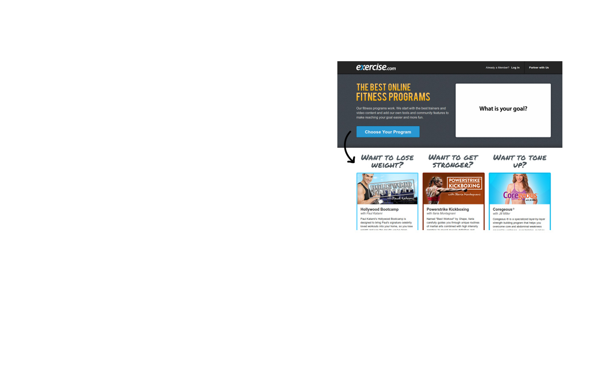

Symfony2 z punktu widzenia Startupu
Kacper Gunia
Symfony2
z punktu widzenia Startupu
Czego potrzebuje Startup?
Co go charakteryzuje?
Skupienie się na zadaniu
a nie na standardowych problemach

na której można się oprzeć
Potrzeba bazy
Jakie są nasze potrzeby?
Czy to rozwiązanie je spełnia?
Czy rozwiązanie jest stabilne?
Czy jest rozwijane?

- Bezpieczeństwo (autentyfikacja + autoryzacja)
- Bezpieczeństwo (autentyfikacja + autoryzacja)
- Formularze / Walidacja
- Bezpieczeństwo (autentyfikacja + autoryzacja)
- Formularze / Walidacja
- Routing
- Bezpieczeństwo (autentyfikacja + autoryzacja)
- Formularze / Walidacja
- Routing
- Szablony
- Bezpieczeństwo (autentyfikacja + autoryzacja)
- Formularze / Walidacja
- Routing
- Szablony
- Tłumaczenia
- Bezpieczeństwo (autentyfikacja + autoryzacja)
- Formularze / Walidacja
- Routing
- Szablony
- Tłumaczenia
- Mapowanie obiektowo-relacyjne bazy danych
- Bezpieczeństwo (autentyfikacja + autoryzacja)
- Formularze / Walidacja
- Routing
- Szablony
- Tłumaczenia
- Mapowanie obiektowo-relacyjne bazy danych
- ... i cała masa innych
Ale nie każdy został napisany po raz drugi ;)
- Biblioteki Symfony2 używane są w innych projektach (Drupal, phpBB4)
Ale nie każdy został napisany po raz drugi ;)
- Biblioteki Symfony2 używane są w innych projektach (Drupal, phpBB4)
- Używamy tylko tych komponentów, które są nam potrzebne
Ale nie każdy został napisany po raz drugi ;)
- Biblioteki Symfony2 używane są w innych projektach (Drupal, phpBB4)
- Używamy tylko tych komponentów, które są nam potrzebne
- Pragmatyzm i dobre praktyki stosowane do bólu
Ale nie każdy został napisany po raz drugi ;)
- Biblioteki Symfony2 używane są w innych projektach (Drupal, phpBB4)
- Używamy tylko tych komponentów, które są nam potrzebne
- Pragmatyzm i dobre praktyki stosowane do bólu
- Continous Integration (Travis, Jenkins)
Ale nie każdy został napisany po raz drugi ;)
- Biblioteki Symfony2 używane są w innych projektach (Drupal, phpBB4)
- Używamy tylko tych komponentów, które są nam potrzebne
- Pragmatyzm i dobre praktyki stosowane do bólu
- Continous Integration (Travis, Jenkins)
- Fun z kodzenia! (spytajcie programistów na widowni :) )
PHP Sucks,
But It Doesn't Matter
Jeff Atwood
Coś co mnie boli
Testowanie funkcjonalne w wielu przeglądarkach
(szczególnie JavaScriptu) to mit
- Społeczność sportowców
- Startup z San Francisco
- Napisany od zera w Symfony2

- Statystyki dla e-commerce
- Symfony2 + Behat
- JS BDD - Jasmine
- Tylko wybrane komponenty z SF2
- 100 milionów odsłon dziennie
Symfony2 nadaje się
do budowania Startupu!
W jakim mieście odbyła się ostatnio największa konferencja
Symfony2 zorganizowana przez Sensio Labs?
Dziękuję bardzo! :)
Kacper Gunia
Silesian PHP User Group
http://spug.pl
twitter: #spug
Lista zdjęć użytych w prezentacji:
Czas na
przykłady!